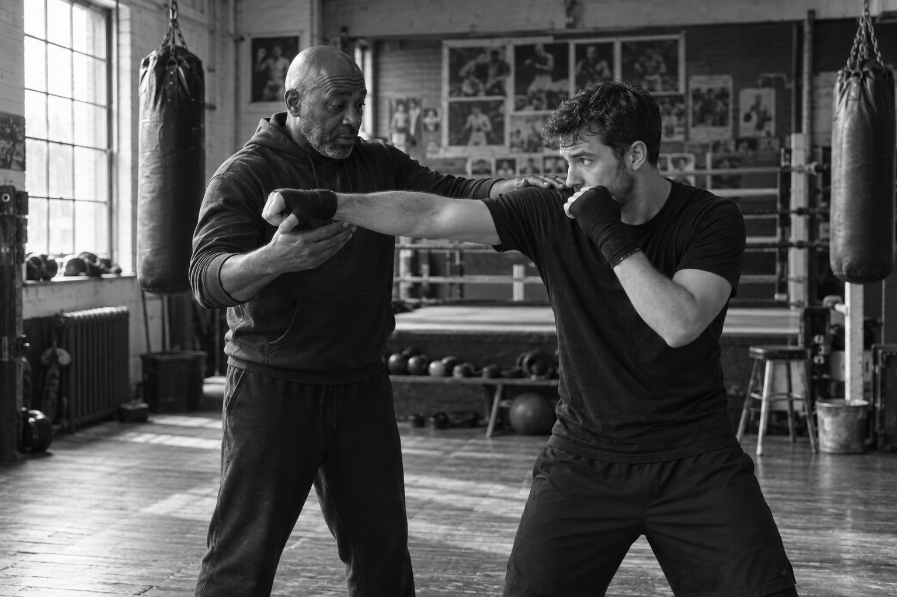

Build your base
Find a stance you can move from. Learn to keep your balance while you throw and return.
Learn to box properly. Patient coaching, good fundamentals, and room to grow from your first round onward.
Book a free first sessionSTANCE / GUARD / JAB / CROSS
EVERYTHING STARTS SOMEWHERE.
01 / OUR APPROACH
We slow things down enough to get them right. Footwork, balance, timing and defence come before speed. You don’t need experience, and you won’t be asked to spar on day one.
See how we train ↗
Find a stance you can move from. Learn to keep your balance while you throw and return.
Work the jab and cross with attention to distance, rotation and the way back to guard.
Small corrections add up. Coaches meet you where you are and help you see what comes next.
02 / THE FIRST VISIT
Your first session is a chance to meet a coach, learn the fundamentals and feel the room. No experience needed. Bring comfortable clothes and water; we’ll guide the rest.
Book a free first session03 / THE PEOPLE
Good coaching is specific. A small adjustment to your feet or guard can change everything.
Meet the coaches ↗